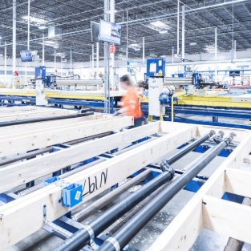
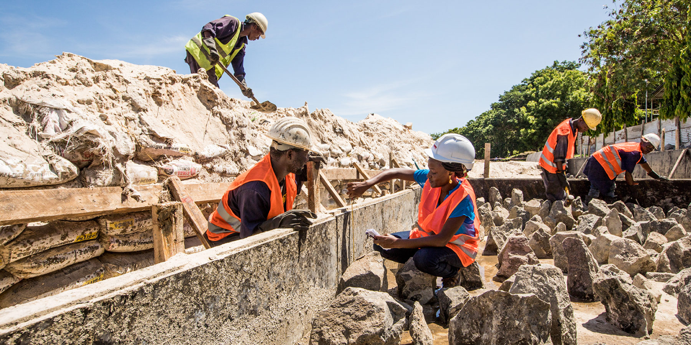
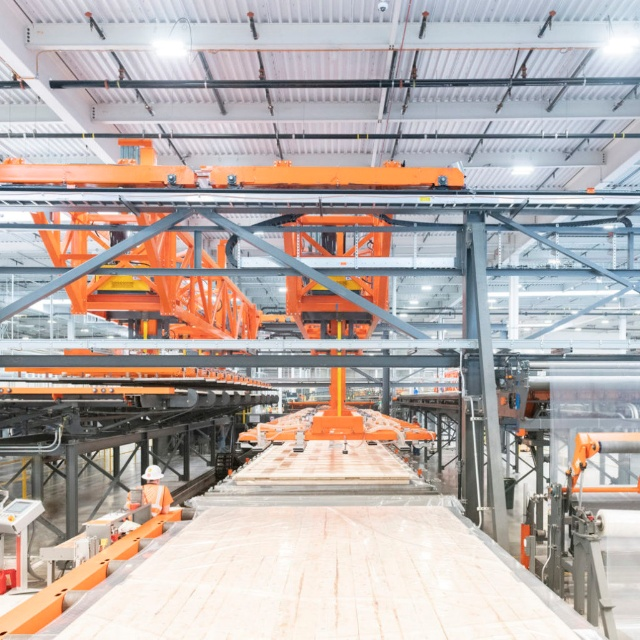

Modular Design Intelligence
Represent buildings as assemblies of parts, interfaces, constraints, and production decisions.
DfMA turns construction into a production-ready design problem: modules, interfaces, factory capability, logistics, assembly sequence, and lifecycle value are considered before the project reaches the site.

The DfMA story begins with contrast: variable site labour on one side, controlled manufacturing and assembly systems on the other.



Generating buildable options, not just beautiful geometry.

Represent buildings as assemblies of parts, interfaces, constraints, and production decisions.
Balance architecture, structure, cost, carbon, safety, logistics, and assembly sequence.
Combine algorithmic search with professional knowledge from design, factory, and site teams.